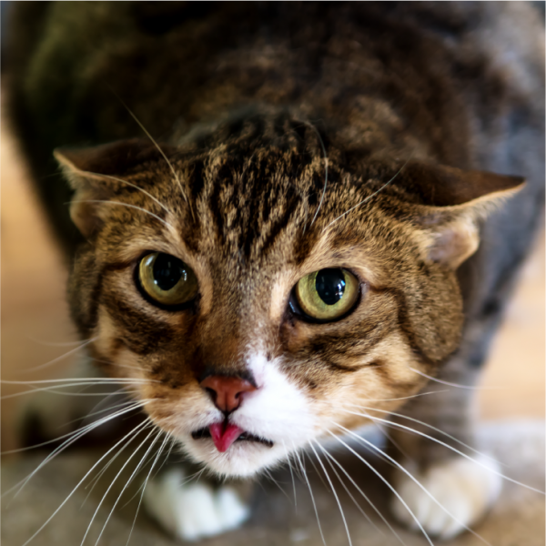

Apesar da pelagem do American Wirehair ser incomum, é fácil de manter. É recomendado escovar seus pelos raramente, pois a escovação em excesso pode danificar a pelagem ou machucá-lo. Esse gatinho não exige cuidados específicos, mas é necessário manter sua higiene sempre em dia, escovar seus dentes pelo menos uma vez por semana, limpar bem a caixinha de areia e levá-lo ao médico veterinário para consultas de rotina e vacinação.

Tiago
Tiago
American Wirehair é uma raça de gato relativamente nova, de pelo espesso, elástico e ondulado. De origem americana, esse gatinho é resultado de uma mutação genética que aconteceu lá em 1966 com filhotes de American Shorthair. Um criador chamado Joan O’Shea se interessou por essa aparência diferente e decidiu realizar um cruzamento com outro gato de pelo ondulado. Após algumas tentativas, o criador chamou um geneticista para examinar esses gatinhos ondulados e foi constatado que eles não tinham relação com Cornish e Devon Rex (que também tem esse aspecto da pelagem), ou seja, era o começo de uma nova raça.